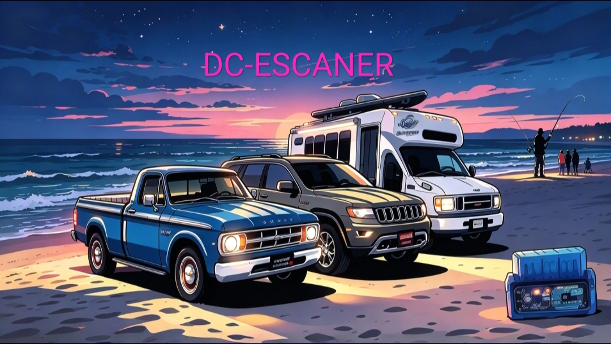
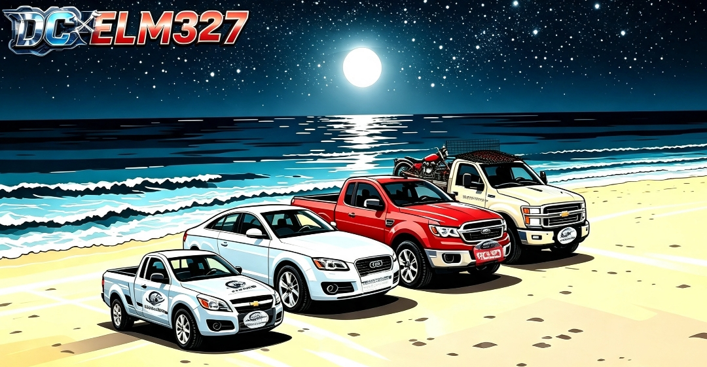
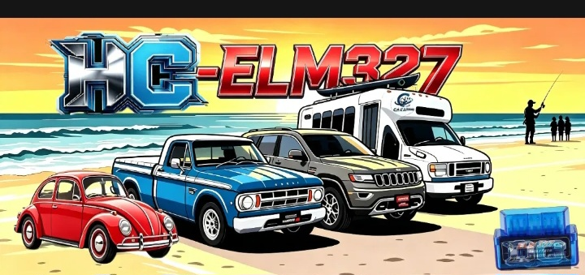
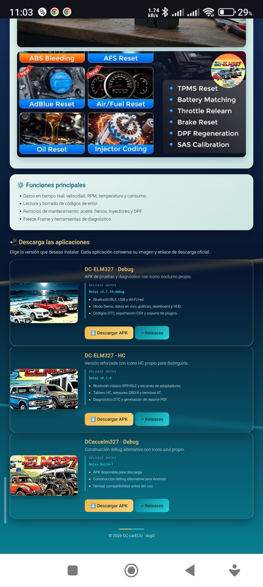
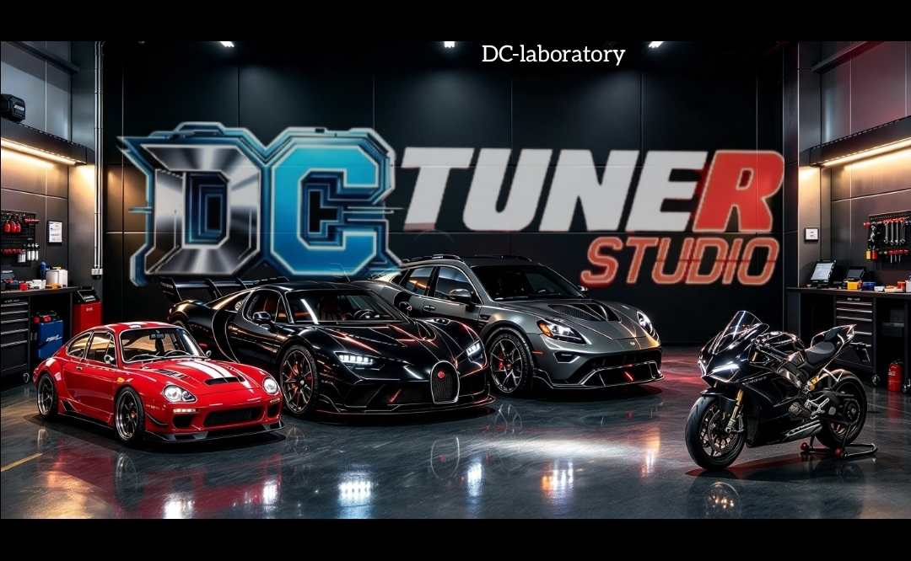
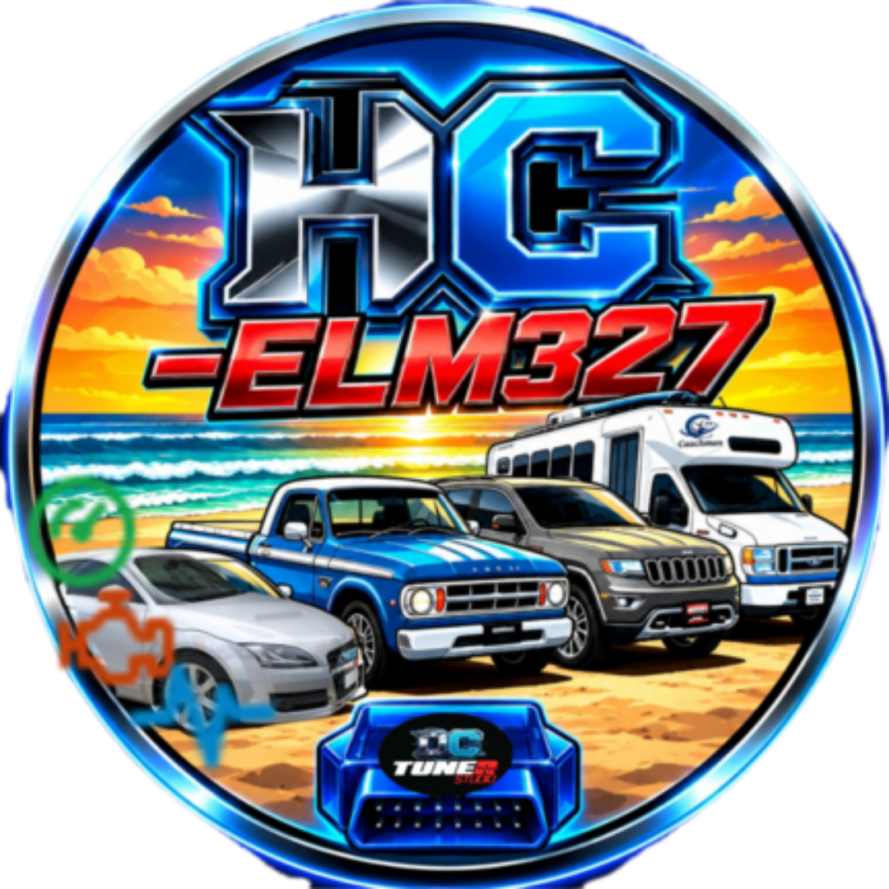
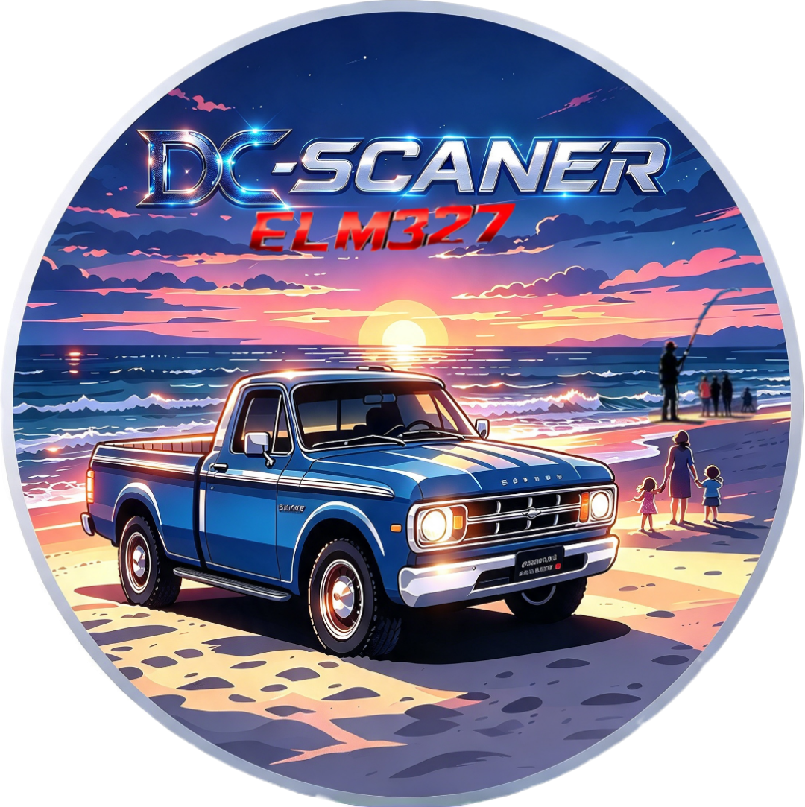

Datos en vivo
Visualiza parámetros del motor y sensores con actualización continua para localizar cambios y anomalías.
OBD-II · DIAGNÓSTICO VEHICULAR
Herramienta para leer datos en vivo, códigos DTC y gráficas del vehículo mediante adaptadores ELM327. Esta página reúne la versión principal de DC-ELM327 y una edición secundaria con conexión reforzada.
BLUETOOTH · USB · WI-FI

La interfaz está pensada para convertir los datos OBD-II en lecturas prácticas para el taller: conecta el adaptador, revisa el estado del vehículo y analiza el comportamiento de los sensores antes de tomar una decisión.
Visualiza parámetros del motor y sensores con actualización continua para localizar cambios y anomalías.
Lee códigos de diagnóstico y conserva el contexto de la lectura antes de borrar o intervenir.
Bluetooth, USB y Wi-Fi para adaptarse al adaptador y al flujo de trabajo de cada vehículo.






Descarga la versión principal de DC-ELM327 o usa la variante HC como opción secundaria para una conexión Bluetooth SPP/BLE reforzada.
Usa los datos como apoyo de diagnóstico. Confirma siempre el vehículo, el adaptador y el protocolo antes de borrar DTC o enviar comandos. Ver código fuente ↗